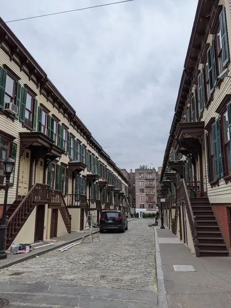

A field guide for the curious
Same city.
Different perspective.
A quiet court behind a busy street. A park above the traffic. The places that make New York, New York—and the stories of how they got here.
Human-curated. Always a little unexpected.

FROM THE FIELD GUIDETake the long way home
Find your kind of unexpected.
Your places are saved in this browser. Share this view to send your collection to a friend.
Loading the map…
Open the original Google Map ↗A different detour?
Curated by humans; descriptions are AI-assisted. Check current access before you go. Some discoveries are private homes or spaces best appreciated from the street.
Proof NYC has depth of character
There’s more to the city
than the grid.
Off The Grid NYC is a collection of places that ask you to look a little closer. Hidden communities, shared gardens, surprising buildings, and small choices that make a big difference to city life.
It’s also a question: who gets space, how is it shared, and what makes a place good to live in? Follow a detour and see the historical and modern political economy of niceness in NYC for yourself.
The city is a collective discovery
Know a place we’ve missed?
A tucked-away street. An unexpected building. A story worth
telling.
Help the field guide grow, one good find at a time.